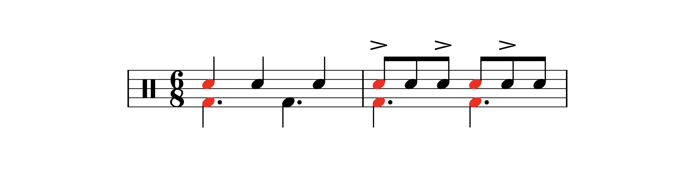
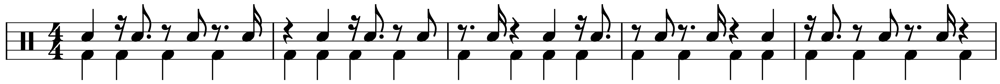
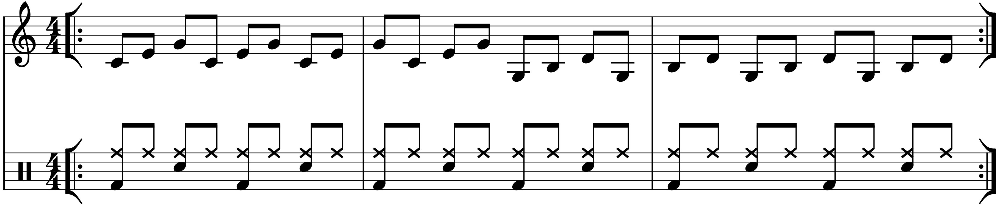
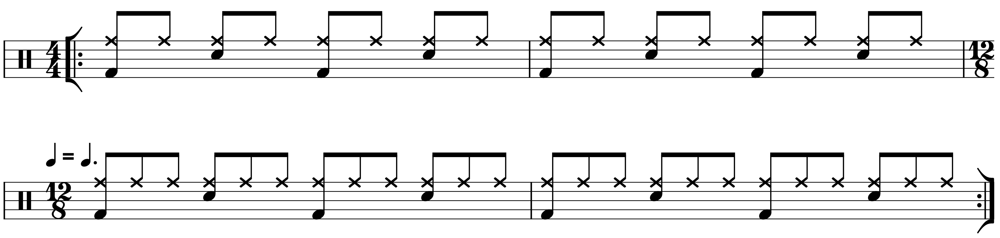
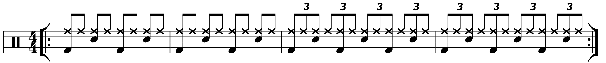
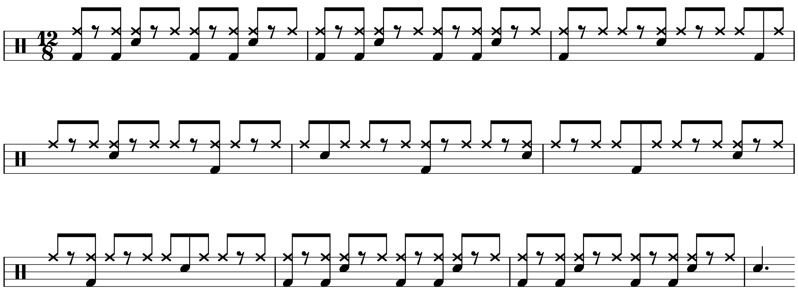

“Advanced” Music Theory (For Drummers)
Posted on February 29, 2021

In my Unpopular Opinions post, I brought up my frustration with drummers throwing around “advanced” music theory terms to look cool, without really investigating these terms mean. I said in that post that there was a chance I would write about this in the future, and here we are. I have four topics to discuss: syncopation, polyrhythm, polymeter, and metric modulation. I want to share my understanding of what these terms mean, and I’ll try to address what seems to be the omnipresent confusion regarding them.
Syncopation
Ah, good old syncopation. Syncopation doesn’t get much thought amongst drummers — I suspect it’s because of Ted Reed’s Syncopation, a book that pretty much every drummer goes through within a year of picking up the instrument. The result is that “syncopation” seems so ubiquitous and broad that it can’t describe anything meaningful, since every moment of popular music seems syncopated.
And that’s pretty true; hitting the snare on two and four is technically syncopation, since two and four are considered weak beats in 4/4, and the snare backbeat gives them emphasis. For me, syncopation is all about contrast: establishing a groove before playing something that sounds offbeat, jagged, or somehow unexpected. I’d say it’s only worth calling something syncopated if it really gets your attention in the context of the music around it.
My go to example is the song “Nobody’s fault But Mine” by Led Zeppelin, particularly around the 2:12 mark. Notice how the band sets up a consistent pattern, but when the section starts over, the drums and bass change their rhythms up so they clash with the rest of the band.
While it may sound like a polyrhythmic/polymeter/metric modulation, it’s not, as I’ll try to make clear throughout the post.
Another favorite example of mine is the cowbell part in Blink–182’s “Feeling This”, which first shows up around 0:33 (check out my blog post about that tune). It’s Latin style rhythm and it comes out of nowhere.
Also note that if a rhythm is gnarly enough, you can describe it as syncopated even without any other context from the song. Check out “Mind Spun” by Animals as Leaders. The main riff is quite disorienting, especially because it subverts the average listener’s expectations, i.e. the rhythms people find to be familiar and common. Again, contrast.
Polyrhythm
Polyrhythm doesn’t really have a simple, well–established definition. It’s occasionally defined as two rhythms played at the same time. But with that thinking, nearly every drum part you hear is polyrhythmic, including this:
More specific definitions specify that the two rhythms must be contrasting, disparate, conflicting, featuring different pulses, and so on. So what this all gets at is that a polyrhythm utilizes two groups of evenly spaced notes that are played during the same time:
Well, that still doesn’t look polyrhythmic. There’s one more caveat: the two patterns must contain a number of notes that don’t divide evenly into each other. The above example features six over two. Obviously two divides evenly into six. But what about two and three?
There we go. Two even notes heard in the space that three even notes are heard.
So what’s the confusion? Well, see what happens if we “fill in” all the snare notes so that an accent pattern creates the “three” rhythm:

Is it still polyrhythmic? I’d say no. The only time notes should line up in a polyrhythm is when the pattern starts over. But in the second example, there are two moments when the rhythms line up:
Here’s another example where accents are used to imply a five over four polyrhythm:
Now we have five moments where the two patterns line up. Take all of those 16th notes out of the snare part, and now we have a true polyrhythm:
Many drummers “fill in” notes to create polyrhythms, i.e. accenting every seventh 16th note in 4/4 to create a “polyrhythm”, but these patterns are not true polyrhythms.
Even though the above pattern stretches over the barline, I’d say it’s still polyrhythmic, even though most examples of polyrhythms are contained in one measure. The above example could be cleaned up by writing it in 5/4 instead — the same rhythm, just counted differently:
On that note…
Polymeter
Polymeter might have to most straightforward definition — two time signatures played at once, typically split between different instruments:
In the above example, we have a piano part in 6/8 with the drums playing in 4/4. Of course, you wouldn’t actually write a full score with two different time signatures at the same time, since different instruments would be at different measures at the same point in the song. So one meter has to be mashed into another. Here’s the same example entirely in 6/8:

And in 4/4:
There’s a bit of confusion regarding the difference between polymeter and polyrhythm. In my above example, the two different patterns are both built with the same rhythm, 8th notes; the key is that these different patterns are of different lengths and take up different amounts of time. The two different rhythms in a polyrhythm must start over at the same time; that’s not the case with a polymeter. Here’s a graphic to drive home the differences:

Metric Modulation
This one drives me absolutely crazy, and for a while it seemed inescapable on the internet. Everywhere I went, it was metric modulation this, metric modulation that, metric modulation here, metric modulation everywhere. Except, metric modulation nowhere.
If you go to music school (or ask anyone who’s not a drummer) you’ll get told that “metric modulation” means to change tempo using a relationship between two subdivisions. You’ll see it notated with a symbol that says something like “quarter note = doted quarter note. Like this:
If you listen to the audio example, you hear that the kick drum sounds like it stays the same speed. The “beat” stays at the same speed, it’s just called something different. The notation tells the performer that, right at the time signature change, the dotted quarter note is to be played as fast as you were playing a quarter note in the measure prior. Here’s another example:
If you listen, you’ll find that this time, the tempo change is much more noticeable. The notation tells us that the half note is to be played as fast as the quarter note. The effect is that the tempo doubles in speed. Here’s a more jarring one, where the quarter note (after the marking) is to be played as fast the quarter note triplet:
As you can imagine, these can get quite complicated, since any combination of notes can be used, such as tuplets or even notes combined with ties.
The point is that true metric modulations must involve tempo changes. However, drummers figured out some time ago that you can use accents and certain subdivisions to trick the listener into thinking that there’s been a tempo change, without actually changing tempo. Here’s a very common example:
The effect is more dramatic if the two patterns are swapped:
This is what has taken over the internet lately, using this approach to create rather awkward or contrasting feels between the drums and the rest of the song. Even more ridiculous, “modulation” is sometimes used to describe any sort of repeated or attention–grabbing syncopation. Here’s a shuffle groove for two bars before a switch to a rather convoluted accent pattern:
A metric modulation right? No. If there’s no tempo change, it’s not a metric modulation. Some may call this an “implied metric modulation”, but I would just call it syncopation like a normal person.
Conclusion
So there you go — hopefully this proves helpful. Most of these terms have very specific/narrow definitions. The truth is, if you’re listening to something that’s rhythmically interesting, it’s probably just syncopation. No need to impress strangers on the internet with fancy words, even though (to my chagrin) many people are indeed impressed when they hear this vocabulary. I’ve basically given up on trying to correct people online, since there’s just too much misunderstanding for one drummer to deal with.